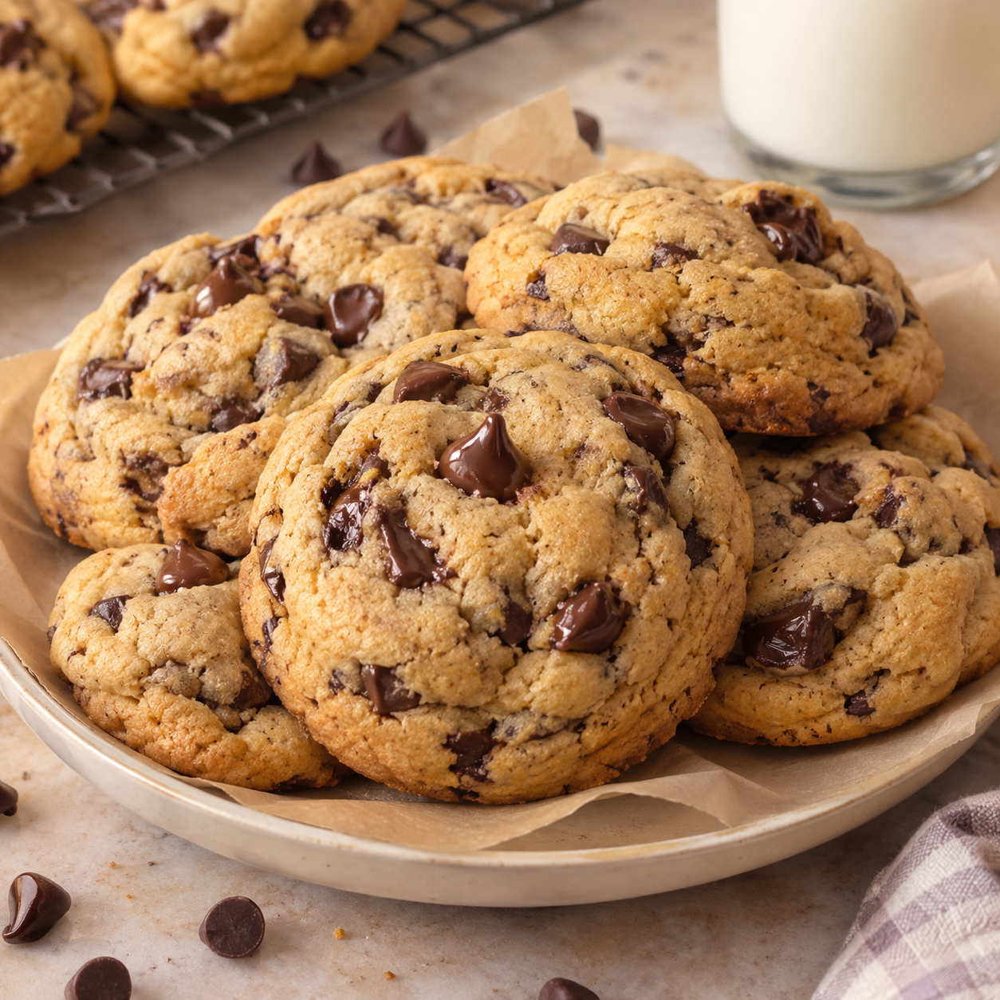

chocolate-chip cookies
Warm, gooey, and made to melt your heart.
⏱ 30 min
Prep Time
⏱ 12 min
Cook Time
Easy
Difficulty
☆ 4.9
128 reviews
✨ Secrets to perfect cookies: .For gooey centers: Don't wait until the middle looks completely firm. .For extra chocolate: Press a few chocolate chips on top before baking. .For chewy cookies: Use brown sugar and avoid adding too much flour. .For the best flavor: Let the dough chill before baking. >Serve warm with a glass of cold milk. 🥛🍪